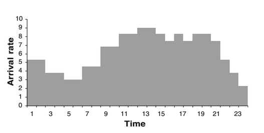
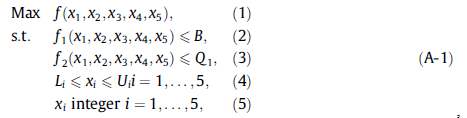

Introdução 1/2
- Sistema de saúde:
- demanda de serviço
- altos custos
- orçamento limitado
- qualidade e rapidez
- Simulação de pronto-socorro do governo do Kuwait
Descrição do sistema 1/3
- 145 pacientes/dia
- Início do processo:
- Término do processo:
Descrição do sistema 2/3
- Classificação dos pacientes:
- Categoria 1 = Críticos
- Categoria 2 = Não-críticos, admitidos
- Categoria 3 = Não-críticos, liberados
- 88% liberados e 12% admitidos
Descrição do sistema 3/3
- Não exceder custo e alocação:
- 3 recepcionistas
- 4 médicos
- 5 tec. laboratório
- 6 enfermeiros de tratamento
- 6 enfermeiros de emergência
- Maximizar o atendimento de pacientes
Simulação do modelo 1/3
- Pesquisa no ED coletou:
- processo de chegada
- serviços na sala de exame
- tempo de serviço em sala de tratamento
- tempo total no ED
- 3 semanas de analise
Simulação do modelo 2/3
- chegada é um processo Poisson não homogêneo
- λ(t) é a taxa de chegada de pacientes no momento t

Simulação do modelo 3/3
- ED modelado por um sistema de simulação de eventos discretos:
- processo de chegada na recepção de λ(t)
- processo de chegada no raio-X com taxa 2/h
- probabilidade de encaminhamento do paciente
- número de servidores
- distribuição de tempo de serviço
O modelo de otimização 1/2
- Maximizar a taxa de transferência/liberação
- Problema descrito por:

O modelo de otimização 2/2
- Resolução levaria mais ou menos 1,5 dias de trabalho
- Criada otimização de simulação descrita por A–1
- Resolução de A–1 em duas fases:
- Soluções factíveis ou quase possíveis
- A melhor solução entre as disponíveis
Resultados computacionais
Resultados computacionais 1/3
Resultados computacionais 2/3
Resultados computacionais 3/3